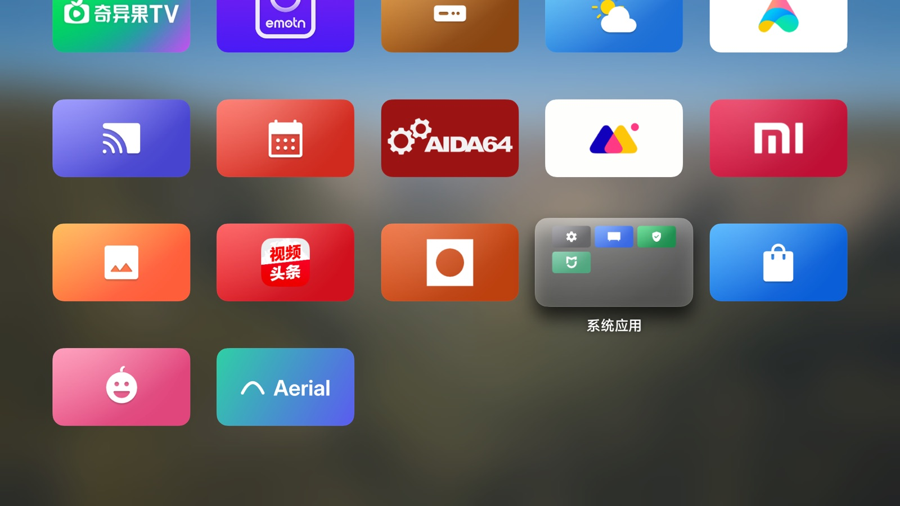
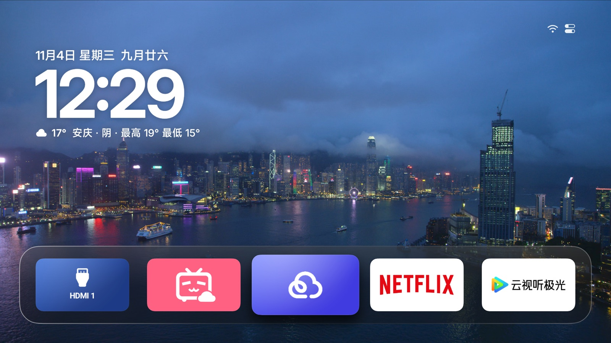
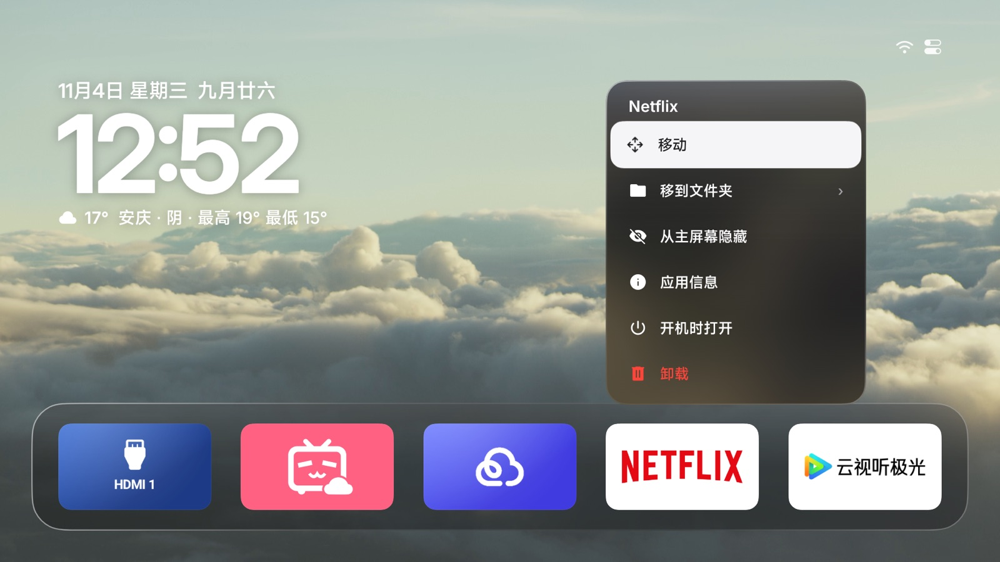
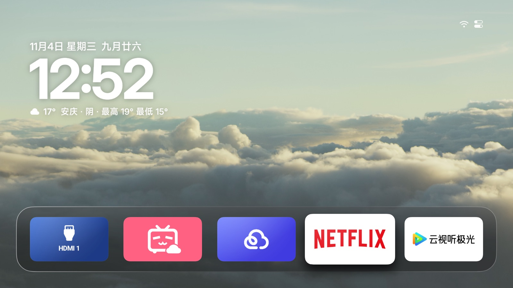

HOME
一排常用的 App，
落在玻璃底板上。
往下滚是全部应用。连小米「应用中心」「米家」这类藏起来的系统 App，也在。

OPEN SOURCE · ANDROID TV
Aerial 是参照 Apple TV 做的 Android TV 桌面。
没有广告，没有推荐流，只有你的 App、壁纸，和 114 段航拍屏保。

Aerial 首页 · 实际界面
01 THE DESKTOP
没有贴片广告，没有会员角标，也没有猜你喜欢的推荐流。桌面只留下两样东西： 你的 App，和一片风景。
HOME
往下滚是全部应用。连小米「应用中心」「米家」这类藏起来的系统 App，也在。

ORGANIZE
移动、放进文件夹、隐藏、卸载，或者设成「开机时打开」——直接进入某个 App 或信号源。

FROM YOUR PHONE
扫电视上的二维码，手机里就是同一张图标网格。
ZERO
开机广告由电视固件播放，Aerial 不参与。
02 SCREENSAVER
Apple TV 的 114 段航拍影片。电视支持时，以 4K 或 4K 杜比视界播放； 也可以换成你的照片、一个安静的时钟，或手机里传来的视频。
屏保画面示意 · 实际内容为航拍影片
03 DETAILS
壁纸、时钟、信号源、按键声——这些不起眼的细节，决定了一块桌面能不能待得久。
WALLPAPER
必应每日精选、14 张内置壁纸、手机扫码上传的照片与视频，或者让航拍在主屏上流动。
停留 10 秒，航拍就在磁贴后面播放。
CONTROL CENTER
在第一排按上键滑出，不用离开桌面。
MAKE IT YOURS

ALWAYS HOME
开机自动进入，待机后不会被系统清理。原桌面还在 App 列表里，随时能退回去。
给任意 App 或信号源设「开机时打开」。
小米 / Redmi · TCL / 雷鸟 · 创维 · 海信 / Vidda · 海尔 · 索尼 · OPPO · 盒子与投影仪
04 INSTALL
不用 root，不动系统应用，随时能还原。原来的桌面、会员、小爱和有线电视都还在。
适用于 Android 5.0 及以上的电视、盒子和投影仪。3.1 MB。
拷进 U 盘，用电视的文件管理器打开安装；或者一条 adb install -r。
按主页键，选择 Aerial，再选「始终」。若电视不弹选择，打开 Aerial，按提示开启「桌面守护」与「通知使用权」。
adb connect <电视IP>:5555
adb install -r aerial-standard.apk
adb shell pm grant app.orchard.tv android.permission.WRITE_SECURE_SETTINGS
adb shell cmd notification allow_listener app.orchard.tv/app.orchard.tv.guard.RevivalListener
adb shell appops set app.orchard.tv SYSTEM_ALERT_WINDOW allow
adb shell am start -n app.orchard.tv/.MainActivity完整分品牌步骤见 官方安装说明。